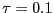
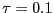

The Andersen Scheme.
Perhaps the simplest thermostat which does correctly sample
the NVT ensemble is due to
Andersen [11]. Here, at each step, some prescribed
number of particles is selected, and their momenta (actually, their
velocities) are drawn from a Gaussian distribution at the prescribed
temperature:
The code mdlj_and.c
implements the
Andersen thermostat with the velocity Verlet algorithm for the
Lennard-Jones fluid. I was curious about the importance placed on the
fact that a Gaussian distribution of velocities is established during
an MD simulation using the Andersen thermostat. F&S seem to indicate
that the truth of this fact means that we are sampling the canonical
ensemble. But they do not show data for the Berendsen thermostat, for
which we should not sample NVT. The figure below is a comparison of
the measured velocity distribution for a 20,000-step run at  = 1.0
and using the Berendsen thermostat with 
and a similar run with the Andersen thermostat with .
Apparently, the Berendsen thermostat also reproduces the correct
distribution.
= 1.0
and using the Berendsen thermostat with 
and a similar run with the Andersen thermostat with .
Apparently, the Berendsen thermostat also reproduces the correct
distribution.
|
The Langevin thermostat. In the ``Langevin'' thermostat, at each time step all particles receive a random force and have their velocities lowered using a constant friction. [12] The average magnitude of the random forces and the friction are related in a particular way, which guarantees that the ``fluctuation-dissipation'' theorem is obeyed, thereby guaranteeing NVT statistics.
In this formalism, the particle- equation of motion is modified:
equation of motion is modified:
| (181) |
The code mdlj_lan.c
implements
the Langevin thermostat. The two major elements are a force initialization
at each time step that adds in the random forces, , and
a slight modification to the update equations in the integrator to
include the effect of  . Note that the initialization of
forces in the force routine has been removed.
. Note that the initialization of
forces in the force routine has been removed.
One advantage of the Langevin thermostat (and to a limited extent, the
Andersen thermostat and other stochastic-based thermostats) is that we
can get away with a larger time step than in NVE simulations. At a
density of  = 0.8442 and a mean temperature
= 0.8442 and a mean temperature  = 1.0, an NVE
simulation is unstable for time-steps above about
= 1.0, an NVE
simulation is unstable for time-steps above about  = 0.004.
We can, however, run a Langevin dynamics simulation with a friction
= 0.004.
We can, however, run a Langevin dynamics simulation with a friction
 = 1.0 stably with a time-step as large as
= 1.0 stably with a time-step as large as  = 0.01
or even higher. This has proven invaluable in simulations of more
complicated systems that simple liquids, namely linear polymers, which
have very long relaxation times. MD with the Langevin thermostat
is the method of choice for equilibrating samples of liquids of
long bead-spring polymer chains.
= 0.01
or even higher. This has proven invaluable in simulations of more
complicated systems that simple liquids, namely linear polymers, which
have very long relaxation times. MD with the Langevin thermostat
is the method of choice for equilibrating samples of liquids of
long bead-spring polymer chains.
Of course, the drawback of most stochastic thermostats (one exception is discussed next) is that momentum transfer is destroyed. So again, it is unadvisable to use Langeving or Andersen thermostats for runs in which you wish to compute diffusion coefficients. I echo the recommendation of F&S: when possible, use NVE to compute properties, and use thermostats for equilibration only.
The Dissipative Particle Dynamics thermostat. The DPD thermostat [13,14] adds pairwise random and dissipative forces to all particles, and has been shown to preserve momentum transport. Hence, it is the only stochastic thermostat so far that should even be considered for use if one wishes to compute transport properties.
The DPD thermostat is implemented by slight modification of the
force routine to add in the pairwise random and dissipative forces.
For the pair, the dissipative force is defined as
| (182) |
| (183) |
The update of velocity uses these new forces:
| (185) | |||
| (186) |
The parameters  and
and  are linked by a fluctuation-dissipation theorem:
are linked by a fluctuation-dissipation theorem:
| (187) |
The cutoff functions are also related:
| (188) |
| (189) |
The code mdlj_dpd.c implements the DPD thermostat in an MD simulation of the Lennard-Jones liquid. The major changes (compared to mdlj.c) are to the force routine, which now requires several more arguments, including particle velocities, and parameters for the thermostat. Inside the pair loop, the force on each particle is updated by the conservative, dissipative, and random pairwise force components. The random force is divided by so that the velocity Verlet algorithm need not be altered to implement Eq. 184.
The behavior of the DPD thermostat can be assessed in a similar
fashion as was the Berendsen thermostat above.
Below is a lin-log plot of system temperature after the setpoint
is changed from 1.0 to 2.0, for a Lennard-Jones system = 256 and
 = 0.8442. Again, each curve corresponds to a different
value of
= 0.8442. Again, each curve corresponds to a different
value of  , and they increase by factors of 10. The
corresponding time at which the setpoint
, and they increase by factors of 10. The
corresponding time at which the setpoint  is reached is also seen
to increase by the same factor.
is reached is also seen
to increase by the same factor.